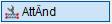
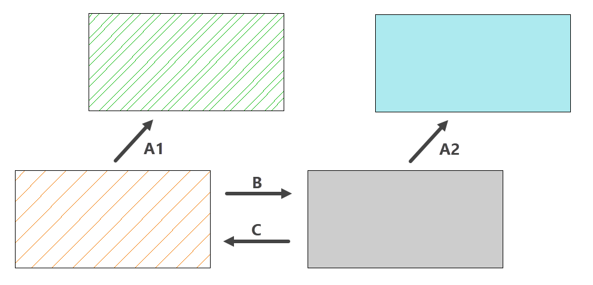
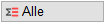
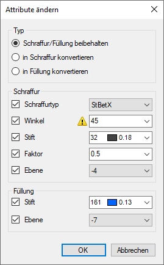

")
")

Sie können Schraffuren und Füllungen mit geänderten Eigenschaften neu generieren. Dabei haben Sie die Möglichkeit, Schraffuren in Füllungen oder Füllungen in Schraffuren umzuwandeln. Diese Funktion enthält zudem die Funktionalität aus [Schraff | generi], sodass sich Schraffuren nach dem Ausführen der Aktion an eine geänderte Geometrie anpassen.
Änderungsmöglichkeiten
 |
A1/A2. Fülltyp (Schraffur und Füllung) bleibt erhalten; B. Schraffur in Füllung konvertieren; C. Füllung in Schraffur konvertieren |
Selektion von zusammenhängenden Polygonen
In ISBCAD können mit den Funktionen [Punkte/Linie → nächstes Polygon] oder mit der Funktion [Fenste] mehrere Polygone mit Schraffuren oder Füllungen versehen werden. Auf diese Weise erstellte Schraffuren/Füllungen werden beim Ändern oder Löschen als eine zusammenhängende Schraffur/Füllung betrachtet und auch bearbeitet. Bei der Selektion mittels Rahmen (von links → rechts) müssen alle Polygone in der Auswahl enthalten sein, die mit einer der genannten Methoden erstellt worden sind. Ansonsten ist das Ändern nicht möglich.
Um zusammenhängende Polygone auszuwählen, klicken Sie diese mit dem Auswahlmodus [Einzelelemente  ] oder [Elemente im Rechteck und Einzelelemente
] oder [Elemente im Rechteck und Einzelelemente  ] an. Alternativ ziehen Sie den Rahmen von rechts → links um eine Schraffur und/oder Füllung auf. Bei Füllungen erkennen Sie zusammenhängende Polygone, indem Sie den Cursor über eine Füllung bewegen. Dabei werden die Umrandungen der entsprechenden Füllungen hervorgehoben.
] an. Alternativ ziehen Sie den Rahmen von rechts → links um eine Schraffur und/oder Füllung auf. Bei Füllungen erkennen Sie zusammenhängende Polygone, indem Sie den Cursor über eine Füllung bewegen. Dabei werden die Umrandungen der entsprechenden Füllungen hervorgehoben.
So wird's gemacht:
§Führen Sie einen der folgenden Schritte aus:
a)Ziehen Sie einen Rahmen durch das Anklicken von zwei Punkten um die zu ändernden Elemente oder klicken Sie einzelne Elemente an. [1.Punkt/Element]; [2.Punkt].
-Solange im Funktionsbereich der Modus Hinzuf aktiviert ist, können Sie der Auswahl weitere Elemente hinzufügen.
-Wählen Sie den Modus Entfer, um einzelne oder mehrere Elemente aus der Auswahl zu entfernen. Bei gedrückter Umschalttaste (Shift) wird automatisch der Entfer-Modus aktiviert - am Cursor wird ein Minuszeichen eingeblendet.
Bestätigen Sie die Auswahl mit Rechtsklick.
b)Wählen Sie alle Schraffuren und Füllungen auf der Zeichenfläche aus, indem Sie unter der Abfrage auf 
§Wählen Sie die zu ändernden Eigenschaften.
-Im Dialog werden die Einstellungen angezeigt, die beim letzten Ausführen der Funktion gewählt wurden.
-Die verfügbaren Einstellungen sind von den selektierten Elementen abhängig. Wurden z. B. ausschließlich Füllungen selektiert, sind nur Schraffur/Füllung beibehalten und in Schraffur konvertieren verfügbar.
- wird angezeigt, wenn in der Selektion auch Schraffuren enthalten, die mit der Funktion 1Reihe erstellt wurden. Bewegen Sie den Cursor über das Symbol, um einen entsprechenden Tooltip zu erhalten.
1Reihe-Schraffuren können nur mit einem kompatiblen Schraffurtyp neu erzeugt werden. Das Ändern des Winkels und die Konvertierung in Füllungen ist nicht möglich. Wenn ausschließlich 1Reihe-Schraffuren ausgewählt wurden, werden Ihnen bei der Schraffurauswahl nur kompatible Schraffurtypen angeboten.
-Bis auf die Korrekturfunktionen können Sie auf alle Funktionen in der unteren Menüleiste zugreifen, während der Dialog geöffnet ist.
-Wenn Sie eine andere Funktion im rechten Menü anklicken, erhalten Sie eine Meldung: Klicken Sie auf Nein zum Fortsetzen der Bearbeitung oder auf Ja zum Abbruch. Nach dem Abbrechen wechselt ISBCAD in die angeklickte Funktion.
 |
Typ Schraffur/Füllung beibehalten Die Art des Fülltyps (Schraffur oder Füllung) bleibt erhalten. Sie können diesen Fülltypen in den Dialogbereichen Schraffur und Füllung neue Attribute zuweisen. in Schraffur konvertieren Ändert im Auswahlbereich alle Füllungen in Schraffuren. Wählen Sie im Dialogbereich Schraffur die Schraffureigenschaften aus. in Füllung konvertieren Ändert im Auswahlbereich alle Schraffuren in Füllungen. Wählen Sie im Dialogbereich Füllung den Stift und die Ebene für die Füllungen aus. Schraffur Wenn unter Typ "Schraffur/Füllung beibehalten" gewählt ist... Setzen Sie bei den Eigenschaften einen Haken Entfernen Sie den Haken aus der Checkbox, wenn die ursprüngliche Eigenschaft beibehalten werden soll. Wenn unter Typ "in Schraffur konvertieren" gewählt ist... Geben Sie hier an, welche Eigenschaften gelten sollen, wenn Füllungen in Schraffuren geändert werden. Die Haken Tipp: Wenn Ihre Maus über ein Mausrad verfügt, können Sie dieses Rad auch zum Durchscrollen der Einträge verwenden, wenn Sie den Mauscursor über eine Dropdown-Liste bewegen. Füllung Wenn unter Typ "Schraffur/Füllung beibehalten" gewählt ist... Setzen Sie bei den Eigenschaften einen Haken Entfernen Sie den Haken aus der Checkbox, wenn die ursprüngliche Eigenschaft beibehalten werden soll. Wenn unter Typ "in Füllung konvertieren" gewählt ist... Geben Sie hier an, welche Eigenschaften gelten sollen, wenn Schraffuren in Füllungen geändert werden. Die Haken |
 , die geändert werden sollen. Klappen Sie anschließend mit einem Linksklick die zugehörige Dropdown-Liste
, die geändert werden sollen. Klappen Sie anschließend mit einem Linksklick die zugehörige Dropdown-Liste Führen Sie einen der folgenden Schritte aus:
a)Klicken Sie auf OK, um die Aktion auszuführen. Um den Vorgang bei Bedarf abzubrechen, betätigen Sie die Leertaste auf der Tastatur. Beachten Sie, dass bereits geänderte Elemente nicht wiederhergestellt werden. Nutzen Sie die Korrekturfunktion in der unteren Menüleiste, um den ursprünglichen Zustand wiederherzustellen.
b)Um die Aktion abzubrechen, klicken Sie auf Abbrechen. Die vorgenommenen Einstellungen werden zurückgesetzt und der Dialog wird geschlossen.
Siehe auch:
·Parameter anhand der ursprünglichen Erstellmethode ändern
Zugehörige Referenzen: